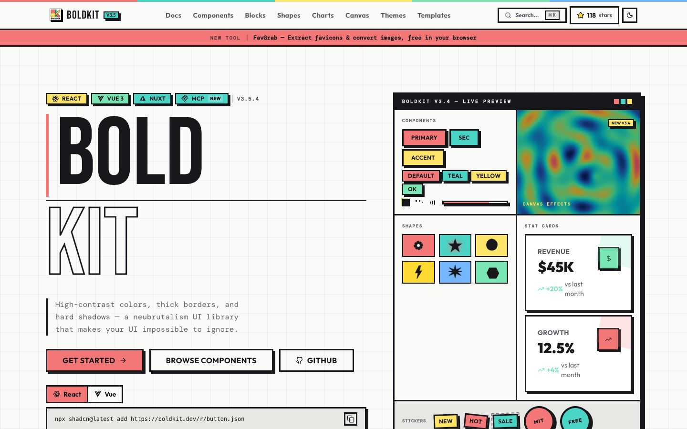

References / Website / 17
BoldKit website
The site of a neubrutalism component library for React and Vue, with a live component preview in the hero.
- Source
- boldkit.dev
- Style
- Neo-brutalism (agent-proposed, not yet reviewed by a person)
- Moods
- Bold, technical, playful
- Evidence
- Captured with
tools/capture.mjs(headless Chrome, 1440 × 900) on 25 September 2026 and inspected. The screenshot shows the first viewport; the measurement covers up to four screens. - Reviewed
- Rights
- Third-party work, stored with credit for commentary. License: unverified. Rights policy
Observed
- The wordmark BOLD KIT is set very large in a condensed sans-serif, with KIT in outline letters.
- Framework tags (React, Vue 3, Nuxt, MCP) are small outlined labels in flat colors with hard shadows.
- A coral Get Started button and white Browse Components and GitHub buttons all have black outlines and hard shadows.
- A preview panel with a black frame shows outlined buttons, shape tiles, and stat cards.
- The page ground is off-white with a faint grid. Body text is monospaced.
Why it belongs
Adds monospaced body text and condensed display type to the grammar. This is where neo-brutalism touches the technical, instrument-like side of Minimalist Machine.
Measured
Machine-extracted by tools/extract-traits.js on . Full measurement.
- Type families
- DM Mono (40%), Outfit (37%), ui-monospace (19%)
- Type scale ratio
- 1.2
- Median radius
- 0 px
- Mean chroma
- 0.11
- Palette
- #fafaf9 56%
- #17171c 14%
- #f37777 7%
- #040404 5%
- #5c5c66 4%
- #49d4c6 4%
- #ffe46b 3%
- #e7e7e4 3%

